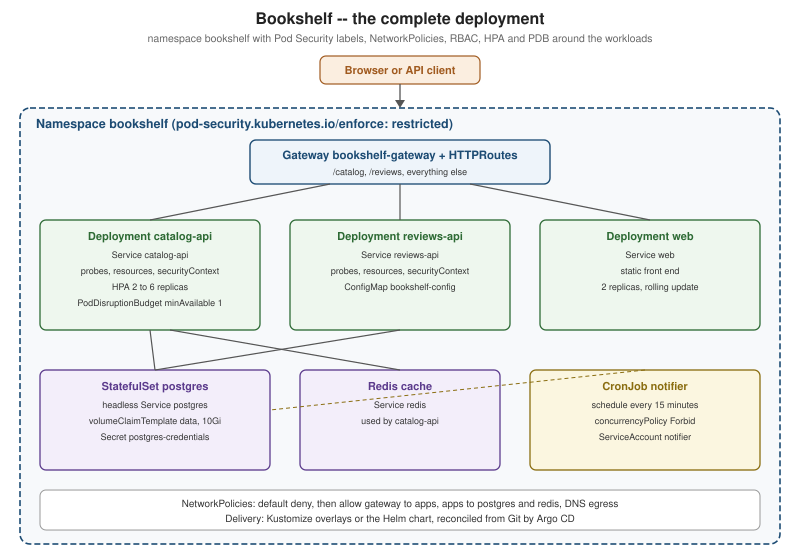

Bookshelf End to End
|
This content was generated with the assistance of AI and should be verified against the official documentation before being relied on in production. |
Every earlier page in this section used one running scenario, the Bookshelf, to show a single feature at a time. This
page assembles the pieces into one working stack, on Kubernetes 1.37 (kubectl 1.37) with a kind 0.33 cluster,
and then shows how the same stack is packaged as Kustomize overlays and a Helm chart and delivered by Argo CD. Each
step links back to the page that explains it, so this is the place to read the concepts in combination, and the
linked pages are the place to read them in depth. The container images are neutral placeholders
(ghcr.io/example/bookshelf-catalog-api:1.0.0 and friends) rather than published images; substitute your own.
The stack has three stateless services — catalog-api, reviews-api and web — a PostgreSQL StatefulSet, a
Redis cache, and a notifier CronJob. The figure below shows the finished result.

Step 1: an empty cluster
A kind cluster with one control plane and two workers (see Getting Started and kubectl Essentials):
kind: Cluster
apiVersion: kind.x-k8s.io/v1alpha4
name: bookshelf
nodes:
- role: control-plane
image: kindest/node:v1.37.0
- role: worker
image: kindest/node:v1.37.0
- role: worker
image: kindest/node:v1.37.0kind create cluster --config kind.yaml
kubectl cluster-info --context kind-bookshelf
kubectl get nodesSource: kind Docs — Configuration
kind’s default CNI, kindnetd, has enforced NetworkPolicies since kind v0.24, so step 9 works on this cluster as is
(see Network Policies). Replacing it with another policy-capable CNI
through networking.disableDefaultCNI: true is optional, as explained in
Cluster Networking and CNI.
Step 2: the namespace and its Pod Security labels
The namespace is the unit that policies, quotas and RBAC attach to. Its labels turn on Pod Security Admission at the
restricted level, so every Pod in it must already follow the hardening used below
(Pod Security):
apiVersion: v1
kind: Namespace
metadata:
name: bookshelf
labels:
pod-security.kubernetes.io/enforce: restricted
pod-security.kubernetes.io/enforce-version: latest
pod-security.kubernetes.io/warn: restrictedStep 3: configuration and credentials
Non-secret settings live in a ConfigMap, credentials in a Secret (see Objects and the API, ConfigMaps and Secrets):
apiVersion: v1
kind: ConfigMap
metadata:
name: bookshelf-config
namespace: bookshelf
data:
DB_HOST: postgres-0.postgres.bookshelf.svc.cluster.local
DB_NAME: catalog
REDIS_HOST: redis.bookshelf.svc.cluster.local
LOG_LEVEL: infoCredentials are generated at creation time and never written into a manifest that is committed:
kubectl -n bookshelf create secret generic postgres-credentials \
--from-literal=POSTGRES_USER=bookshelf \
--from-literal=POSTGRES_PASSWORD="$(openssl rand -base64 24)"In a real delivery pipeline the Secret comes from an external secret manager or a sealed secret, as described in GitOps and CI/CD.
Step 4: PostgreSQL as a StatefulSet
A headless Service and a one-replica StatefulSet with a volumeClaimTemplate, following
StatefulSets and Persistent Volumes and Storage Classes. Production
clusters should prefer an operator or a managed database; see
Stateful Applications in Practice.
apiVersion: v1
kind: Service
metadata:
name: postgres
namespace: bookshelf
spec:
clusterIP: None
selector:
app.kubernetes.io/name: postgres
ports:
- port: 5432
---
apiVersion: apps/v1
kind: StatefulSet
metadata:
name: postgres
namespace: bookshelf
spec:
serviceName: postgres
replicas: 1
selector:
matchLabels:
app.kubernetes.io/name: postgres
template:
metadata:
labels:
app.kubernetes.io/name: postgres
app.kubernetes.io/part-of: bookshelf
spec:
securityContext:
runAsNonRoot: true
runAsUser: 999
fsGroup: 999
seccompProfile:
type: RuntimeDefault
containers:
- name: postgres
image: postgres:18
ports:
- containerPort: 5432
envFrom:
- secretRef:
name: postgres-credentials
env:
- name: POSTGRES_DB
valueFrom:
configMapKeyRef:
name: bookshelf-config
key: DB_NAME
- name: PGDATA
value: /var/lib/postgresql/data/pgdata
readinessProbe:
exec:
command: ["pg_isready", "-U", "bookshelf"]
resources:
requests: { cpu: 250m, memory: 512Mi }
limits: { memory: 512Mi }
securityContext:
allowPrivilegeEscalation: false
capabilities:
drop: ["ALL"]
volumeMounts:
- name: data
mountPath: /var/lib/postgresql/data
volumeClaimTemplates:
- metadata:
name: data
spec:
accessModes: ["ReadWriteOnce"]
resources:
requests:
storage: 10GiSource: Kubernetes Docs — StatefulSets
Step 5: the three Deployments
Each service is a Deployment with a rolling update strategy, readiness and liveness probes, resource requests and
limits, and a restricted securityContext. catalog-api is shown in full; the others differ only in name, image,
port and the environment they receive. See Pods, ReplicaSets and Deployments,
Deployment Strategies, Health Probes and Lifecycle and
Resource Management.
apiVersion: apps/v1
kind: Deployment
metadata:
name: catalog-api
namespace: bookshelf
labels:
app.kubernetes.io/name: catalog-api
app.kubernetes.io/part-of: bookshelf
spec:
replicas: 2
strategy:
type: RollingUpdate
rollingUpdate:
maxSurge: 1
maxUnavailable: 0
selector:
matchLabels:
app.kubernetes.io/name: catalog-api
template:
metadata:
labels:
app.kubernetes.io/name: catalog-api
app.kubernetes.io/part-of: bookshelf
spec:
automountServiceAccountToken: false
securityContext:
runAsNonRoot: true
seccompProfile:
type: RuntimeDefault
containers:
- name: catalog-api
image: ghcr.io/example/bookshelf-catalog-api:1.0.0
ports:
- name: http
containerPort: 8080
envFrom:
- configMapRef:
name: bookshelf-config
env:
- name: DB_USER
valueFrom:
secretKeyRef:
name: postgres-credentials
key: POSTGRES_USER
startupProbe:
httpGet: { path: /health/started, port: http }
failureThreshold: 30
periodSeconds: 2
readinessProbe:
httpGet: { path: /health/ready, port: http }
periodSeconds: 5
livenessProbe:
httpGet: { path: /health/live, port: http }
periodSeconds: 10
resources:
requests: { cpu: 200m, memory: 256Mi }
limits: { memory: 384Mi }
securityContext:
allowPrivilegeEscalation: false
readOnlyRootFilesystem: true
capabilities:
drop: ["ALL"]
volumeMounts:
- name: tmp
mountPath: /tmp
volumes:
- name: tmp
emptyDir: {}Source: Kubernetes Docs — Deployments
The database password is deliberately not passed as an environment variable here; the application reads it from a
mounted Secret file or, better, from a short-lived credential source. The reviews-api Deployment listens on port
8081 and web on port 8080 with replicas: 2.
Step 6: Services
A ClusterIP Service per Deployment gives each a stable name and virtual IP; the Gateway routes to them (see Services and DNS and Service Discovery):
apiVersion: v1
kind: Service
metadata:
name: catalog-api
namespace: bookshelf
spec:
selector:
app.kubernetes.io/name: catalog-api
ports:
- name: http
port: 80
targetPort: httpSource: Kubernetes Docs — Service
Step 7: Gateway and HTTPRoutes
Gateway API replaces Ingress for the north-south entry point. The GatewayClass and controller installation are in Gateway API (Envoy Gateway on kind); the Bookshelf-specific part is one Gateway and one HTTPRoute (compare Ingress, which the Ingress-NGINX retirement has made a legacy choice):
apiVersion: gateway.networking.k8s.io/v1
kind: Gateway
metadata:
name: bookshelf-gateway
namespace: bookshelf
spec:
gatewayClassName: envoy-gateway
listeners:
- name: http
protocol: HTTP
port: 80
allowedRoutes:
namespaces:
from: Same
---
apiVersion: gateway.networking.k8s.io/v1
kind: HTTPRoute
metadata:
name: bookshelf
namespace: bookshelf
spec:
parentRefs:
- name: bookshelf-gateway
rules:
- matches:
- path: { type: PathPrefix, value: /catalog }
backendRefs:
- name: catalog-api
port: 80
- matches:
- path: { type: PathPrefix, value: /reviews }
backendRefs:
- name: reviews-api
port: 80
- matches:
- path: { type: PathPrefix, value: / }
backendRefs:
- name: web
port: 80Source: Gateway API Docs — HTTPRoute
Step 8: a Redis cache
The cache is a single-replica Deployment behind a Service named redis, following the same shape as the services
above (an image of redis:8, port 6379, a readinessProbe running redis-cli ping). A replicated, Sentinel-managed
Redis is the subject of Stateful Applications in Practice, and Redis itself is
covered in Redis on Kubernetes.
Step 9: NetworkPolicies
By default every Pod can reach every other Pod. A default-deny policy plus narrow allows implements least privilege (Network Policies):
apiVersion: networking.k8s.io/v1
kind: NetworkPolicy
metadata:
name: default-deny
namespace: bookshelf
spec:
podSelector: {}
policyTypes: ["Ingress", "Egress"]
---
apiVersion: networking.k8s.io/v1
kind: NetworkPolicy
metadata:
name: allow-catalog-to-postgres
namespace: bookshelf
spec:
podSelector:
matchLabels:
app.kubernetes.io/name: postgres
policyTypes: ["Ingress"]
ingress:
- from:
- podSelector:
matchLabels:
app.kubernetes.io/name: catalog-api
ports:
- port: 5432
---
apiVersion: networking.k8s.io/v1
kind: NetworkPolicy
metadata:
name: allow-dns-egress
namespace: bookshelf
spec:
podSelector: {}
policyTypes: ["Egress"]
egress:
- to:
- namespaceSelector:
matchLabels:
kubernetes.io/metadata.name: kube-system
ports:
- { port: 53, protocol: UDP }
- { port: 53, protocol: TCP }Further allow rules admit the Gateway’s data plane to the three front-end services, the services to Redis, and
catalog-api egress to PostgreSQL on port 5432.
Step 10: RBAC for the notifier
Pods run as a ServiceAccount, and a Role grants exactly what that account needs
(Authentication, Authorization and RBAC). The notifier reads the ConfigMap and
nothing else:
apiVersion: v1
kind: ServiceAccount
metadata:
name: notifier
namespace: bookshelf
automountServiceAccountToken: false
---
apiVersion: rbac.authorization.k8s.io/v1
kind: Role
metadata:
name: notifier-config-reader
namespace: bookshelf
rules:
- apiGroups: [""]
resources: ["configmaps"]
resourceNames: ["bookshelf-config"]
verbs: ["get"]
---
apiVersion: rbac.authorization.k8s.io/v1
kind: RoleBinding
metadata:
name: notifier-config-reader
namespace: bookshelf
subjects:
- kind: ServiceAccount
name: notifier
roleRef:
kind: Role
name: notifier-config-reader
apiGroup: rbac.authorization.k8s.ioVerify it with kubectl auth can-i get configmaps/bookshelf-config --as system:serviceaccount:bookshelf:notifier -n bookshelf.
As written, the notifier never uses this Role: it receives the ConfigMap through envFrom, which the kubelet
resolves with its own credentials and which needs no RBAC for the Pod, and automountServiceAccountToken: false
means the container holds no token to call the API with. The Role only takes effect if the job reads the ConfigMap
through the API server itself, in which case set automountServiceAccountToken: true on the ServiceAccount (or on
the CronJob’s Pod template).
Step 11: autoscaling and disruption budget
An HPA (autoscaling/v2) scales catalog-api on CPU, and a PodDisruptionBudget keeps at least one replica during
node drains (Autoscaling, Scheduling and Disruptions). The HPA needs
metrics-server, installed as described in Observability: Logging and Metrics.
apiVersion: autoscaling/v2
kind: HorizontalPodAutoscaler
metadata:
name: catalog-api
namespace: bookshelf
spec:
scaleTargetRef:
apiVersion: apps/v1
kind: Deployment
name: catalog-api
minReplicas: 2
maxReplicas: 6
metrics:
- type: Resource
resource:
name: cpu
target:
type: Utilization
averageUtilization: 70
---
apiVersion: policy/v1
kind: PodDisruptionBudget
metadata:
name: catalog-api
namespace: bookshelf
spec:
minAvailable: 1
selector:
matchLabels:
app.kubernetes.io/name: catalog-apiStep 12: the notifier CronJob
The notifier sends review digests every fifteen minutes (see Jobs and CronJobs):
apiVersion: batch/v1
kind: CronJob
metadata:
name: notifier
namespace: bookshelf
spec:
schedule: "*/15 * * * *"
concurrencyPolicy: Forbid
successfulJobsHistoryLimit: 3
jobTemplate:
spec:
backoffLimit: 2
activeDeadlineSeconds: 600
ttlSecondsAfterFinished: 3600
template:
spec:
serviceAccountName: notifier
restartPolicy: OnFailure
securityContext:
runAsNonRoot: true
seccompProfile:
type: RuntimeDefault
containers:
- name: notifier
image: ghcr.io/example/bookshelf-notifier:1.0.0
envFrom:
- configMapRef:
name: bookshelf-config
resources:
requests: { cpu: 50m, memory: 64Mi }
limits: { memory: 128Mi }
securityContext:
allowPrivilegeEscalation: false
capabilities:
drop: ["ALL"]Source: Kubernetes Docs — CronJob
Then apply everything and check the result:
kubectl apply -f namespace.yaml
kubectl apply -f . --recursive
kubectl -n bookshelf get all,gateway,httproute,hpa,pdb,networkpolicy
kubectl -n bookshelf rollout status deployment/catalog-api
export ENVOY_SERVICE=$(kubectl get svc -n envoy-gateway-system \
--selector=gateway.envoyproxy.io/owning-gateway-namespace=bookshelf,gateway.envoyproxy.io/owning-gateway-name=bookshelf-gateway \
-o jsonpath='{.items[0].metadata.name}')
kubectl -n envoy-gateway-system port-forward service/${ENVOY_SERVICE} 8080:80 &
curl -s http://localhost:8080/catalog/kind has no cloud load balancer, so the Gateway’s Envoy Service never gets an external address; as in
Gateway API, kubectl port-forward to that Service reaches it from the host.
Source: Envoy Gateway Docs — Quickstart
When something does not start, the routine in Debugging and Troubleshooting applies:
kubectl describe, events, logs and kubectl debug. Node-level scheduling rules such as affinity and taints are in
Scheduling and Disruptions, the wider cluster design in
Introduction and Architecture, and namespace quotas and limits in
Resource Management. Other workload controllers used elsewhere in the section are
DaemonSets (per-node agents), and extensions through
Custom Resources and Operators and
Admission Control and Policy.
Packaged as Kustomize overlays
Fifteen-odd hand-applied files do not scale to several environments. The same objects move into a Kustomize base with one overlay per environment (Kustomize):
# k8s/overlays/prod/kustomization.yaml
apiVersion: kustomize.config.k8s.io/v1beta1
kind: Kustomization
resources:
- ../../base
- hpa.yaml
images:
- name: ghcr.io/example/bookshelf-catalog-api
newTag: 1.1.0
patches:
- path: resources-patch.yamlkubectl kustomize k8s/overlays/prod | less
kubectl apply -k k8s/overlays/prodPackaged as a Helm chart
Where the stack is installed by other teams, with values, upgrades and rollbacks, it becomes a chart (Helm). The environment is then a values file:
helm lint charts/bookshelf
helm upgrade --install bookshelf charts/bookshelf \
--namespace bookshelf --create-namespace \
-f charts/bookshelf/values-prod.yaml
helm history bookshelf -n bookshelf
helm rollback bookshelf 1 -n bookshelfSource: Helm Docs — helm upgrade
Kustomize is simpler when you own the manifests; Helm is better when you distribute them. Both are legitimate inputs to the next step.
Delivered with Argo CD
Delivery by hand is replaced with a Git repository and a controller that reconciles the cluster to it
(GitOps and CI/CD). An Argo CD Application points at the prod overlay:
apiVersion: argoproj.io/v1alpha1
kind: Application
metadata:
name: bookshelf-prod
namespace: argocd
spec:
project: default
source:
repoURL: https://github.com/example/bookshelf-deploy.git
targetRevision: main
path: k8s/overlays/prod
destination:
server: https://kubernetes.default.svc
namespace: bookshelf
syncPolicy:
automated:
prune: true
selfHeal: trueThe Bookshelf is the same shape as the older teaching examples. Rensin’s 2015 book walks through a Guestbook (a front end plus a Redis back end) and a WordPress plus MySQL pair (a stateless web tier plus a stateful database on a persistent volume). Each maps onto steps above: stateless Deployments behind Services, and PostgreSQL and Redis as stateful back ends with their own storage. Running WordPress itself on containers and Kubernetes is covered in Containers, Docker and Kubernetes.
Application-side notes
The cluster only runs what the application exposes, so each framework has a few obligations. Health endpoints must exist for the probes, configuration should arrive through environment variables or mounted files, the process must handle SIGTERM for graceful shutdown, and logs should go to standard output.
-
Spring Boot: Actuator liveness and readiness groups back the probes, and ConfigMaps and Secrets can be imported as configuration; see Spring Boot configuration and profiles and Spring Boot metrics and observability.
-
Quarkus: the Kubernetes extension generates the manifests and the health and metrics extensions provide the endpoints; see Quarkus on Kubernetes and OpenShift.
-
ASP.NET Core and Aspire: health checks map to the probes and Aspire can publish a deployment manifest; see ASP.NET Core Aspire and cloud native.
-
FastAPI: a Python equivalent is planned as a separate section (issue #199) and is mentioned here only for completeness; the same probe, configuration and shutdown obligations apply.
The images themselves are built and published as described in Docker image best practices and security and Registries and Docker Hub. A list of everything that changed since the books were written is in What’s Changed and Migration, managed-cluster variants are in Managed Kubernetes and Distributions, and cluster administration is in Cluster Setup and Administration. The volume and storage building blocks used by PostgreSQL are in Volumes and Ephemeral Storage, pod-to-pod wiring in Cluster Networking and CNI, and device-heavy workloads in Dynamic Resource Allocation and Devices.
References
-
Kubernetes Docs — Configure Liveness, Readiness and Startup Probes
-
Hightower, K., Burns, B. and Beda, J. (2017). Kubernetes: Up and Running. O’Reilly.